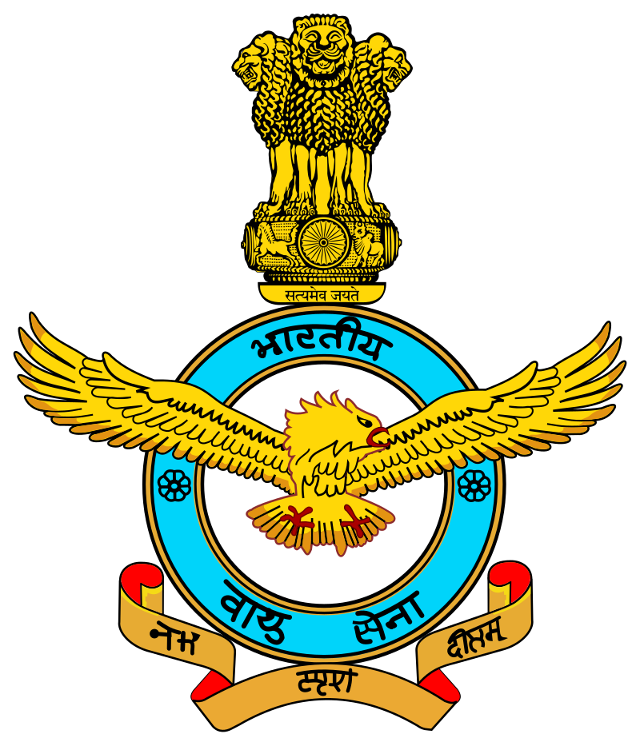
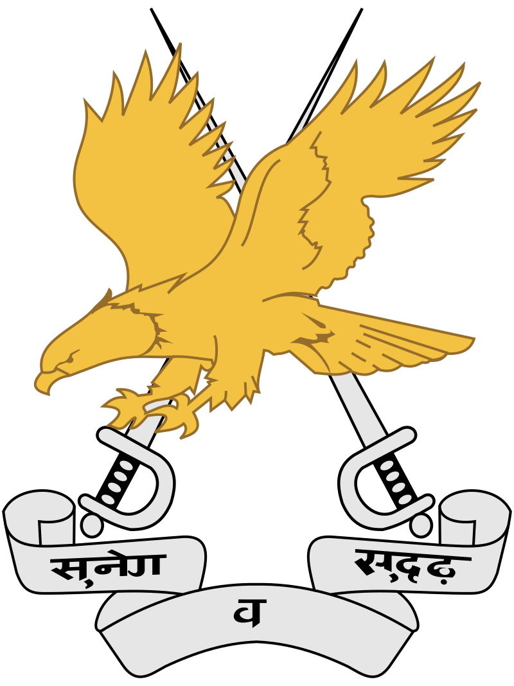
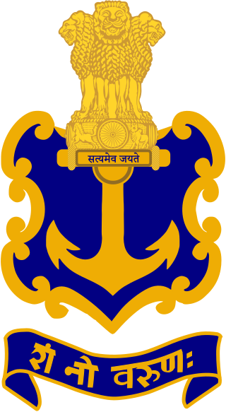

Air Force
Country:India
- Type: Air force
Role: Aerial warfare
Size: 139,576 active personnel[1]
140,000 reserve personnel[2] Approx 1926+ aircraft[3][4]
Part of Indian Armed Forces
Motto(s): Nabhaḥ Spr̥śaṁ Dīptam (ISO) transl.
"Touch the Sky with Glory"[5][6][7] (Taken from Bhagavad Gita)[8]
-
Anniversaries: 8 October (Air Force Day)[9][10]
Website: indianairforce.nic.in
Commanders Commander-in-Chief: India President Droupadi Murmu
Chief of the Air Staff (CAS): Air Chief Marshal Amar Preet Singh
Vice Chief of the Air Staff (VCAS): Air Marshal Sujeet Pushpakar Dharkar
Deputy Chief of the Air Staff (DCAS): Air Marshal Tejinder Singh
commanders: Marshal of the Indian Air Force: Arjan Singh
Air Chief Marshal: Pratap Chandra Lal
Air Marshal: Subroto Mukherjee
The Indian Air Force (IAF) is the air arm of the Indian Armed Forces. It was officially established on 8 October 1932 as an auxiliary air force of the British Empire which honoured India's aviation service during World War II with the prefix Royal.After India gained independence from United Kingdom in 1947, the name Royal Indian Air Force was kept and served in the name of the Dominion of India. With the transition to a republic in 1950, the prefix Royal was removed.
Army Aviation Corps
 Founded 1 November 1986
Country: India
Type:Army aviation
Role:
- Anti-tank warfare
- Battlefield support
- Counterinsurgency operations
- Counter Surface Force Operation
- High Altitude Warfare
- Humanitarian aid and disaster response Reconnaissance
- Search and rescue
- Suppression of Enemy Air Defenses
- Urban warfare Size 296 manned aircraft (Excluding UAVs) Part of Indian Army Motto(s) Sanskrit: सुवेग व सुदृढ़ English: Swift and Sure[1]
- Indo-Pakistani War of 1965
- Indo-Pakistani War of 1971
- Siachen conflict
- Operation Pawan
- UNOSOM II
- Kargil War
- Operation Hot Pursuit
- Director general: Lieutenant General Vinod
- general:Nambiar
The Army Aviation Corps (AAC)is the youngest arm of the Indian Army, being formally designated on 1 November 1986. The Army Aviation Corps units are designated as Squadrons. Each squadron generally consists of two Flights. Reconnaissance (Recce) and Observation (R & O) flights might be part of squadrons or operate independently. The latter do not have a parent squadron and are designated by an (I) in their name.
Indian Navy
Founded:
- 26 January 1950; 74 years ago (as current service)
- 5 September 1612; 412 years ago (as East India Company's Marine)[1][2]
Type: Navy
Role:
- Naval warfare
- force projection
- sealift
- nuclear deterrence
- 64,000 active personnel
- 50,000 reserve personnel (250 ships including auxiliaries)
Approx. 300 aircraft
Part of Indian Armed Forces
'May the Lord of Water be auspicious onto us'
Colours: Navy blue, gold and white
March:
-
Quick: Jai Bharati
(Victory to India)
Slow: Anand Lok (Realm of Joy)
The Indian Navy the maritime branch of theIndian Armed Forces. The President of India is the Supreme Commander of the Indian Navy. The Chief of Naval Staff, a four-star admiral, commands the navy. As a blue-water navy, it operates significantly in the Persian Gulf Region, the Horn of Africa, the Strait of Malacca operations.